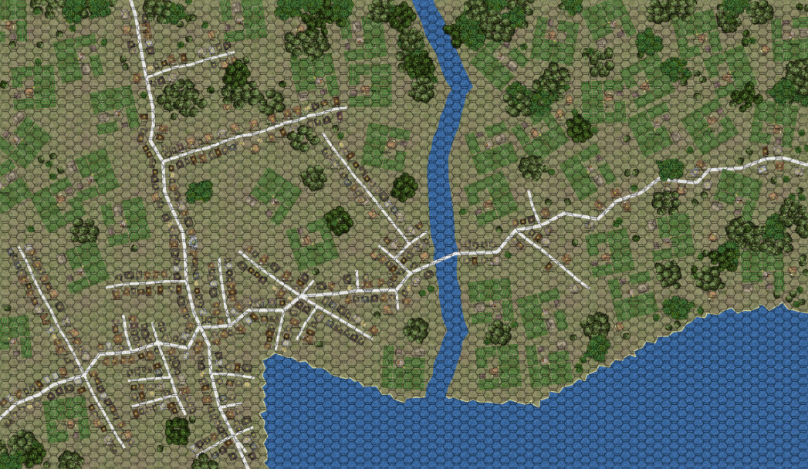

City of Grace¶
For completeness, this is the seaport City of Grace, at the mouth of the river. This city is the major seaport on the south side of the Kingdom of the East. While pirates are blocking traffic on the north coast, this is the economic center of the kingdom.
